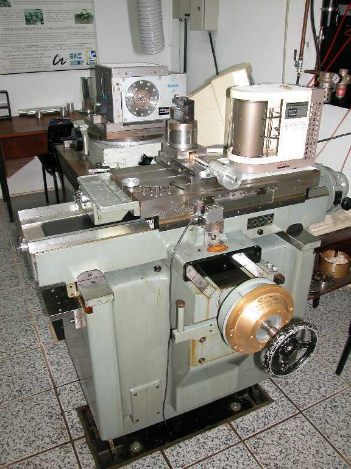

OBJETIVOS
Este projeto tem como objetivo melhorar a qualidade das peças usinadas
em um torno de ultraprecisão. Para propiciar melhoras na qualidade geométrica,
dimensional e de forma das peças, será feita uma análise
dos fatores que influenciam o processo, principalmente no tocante as vibrações
induzidas pelo meio, pela máquina, pelo processo de usinagem e pelo
trem de acionamento. Deseja-se que este torno seja capaz de produzir superfícies
que tenham rugosidade Rz inferiores a 50 nm, o que caracteriza superfícies ópticas.
Pretende-se também verificar a viabilidade de implantação
de um sistema de posicionamento submicrométrico nas guias trapezoidais
de escorregamento.
Um sistema desse tipo possibilitaria determinar a geometria das superfícies
que poderão ser fabricadas (planos, parábolas, superfícies
asféricas ou outras).
PROCEDIMENTOS
Será feita uma análise dinâmica na máquina e
a comparação da qualidade superficial das peças teste.
Alguns dos principais fatores que influenciam negativamente o processo serão
estudados:
- Baixa suavidade no trem de acionamento;
- Vibrações não desejadas entre a peça e a
ferramenta;
- Injeção de fluído de corte e aspiração
de cavacos ineficientes;
- Falta de procedimento para balanceamento da árvore.
A metodologia de trabalho consiste em fabricar corpos de prova nas condições
anteriores e posteriores às intervenções planejadas
para o trabalho. Para cada conjunto de corpos de prova, que representa variação
em apenas um dos parâmetros do processo, será feita a medição
da rugosidade das peças. Os resultados das rugosidades serão
relacionados às curvas de espectro de potência (FFT) e de vibração
global (RMS) dos sinais de acelerômetros fixados na ferramenta de diamante.
Os ensaios a serem realizados, visando verificar se há viabilidade
de posicionamento submicrométrico e também determinar a geometria
das peças que poderão ser fabricadas são:
- determinação da curva de atrito das guias;
- determinação da resposta ao degrau e resposta em freqüência
do acionamento.
RESULTADOS
Este projeto está em andamento e espera poder contribuir com a compreensão
dos fatores dinâmicos que influenciam o processo de usinagem de ultraprecisão. As figuras abaixo mostram uma vista do torno onde o estudo está sendo
realizado e uma peça fabricada em alumínio:

Vista frontal do torno do LMP

Espelho usinado no torno do LMP
|